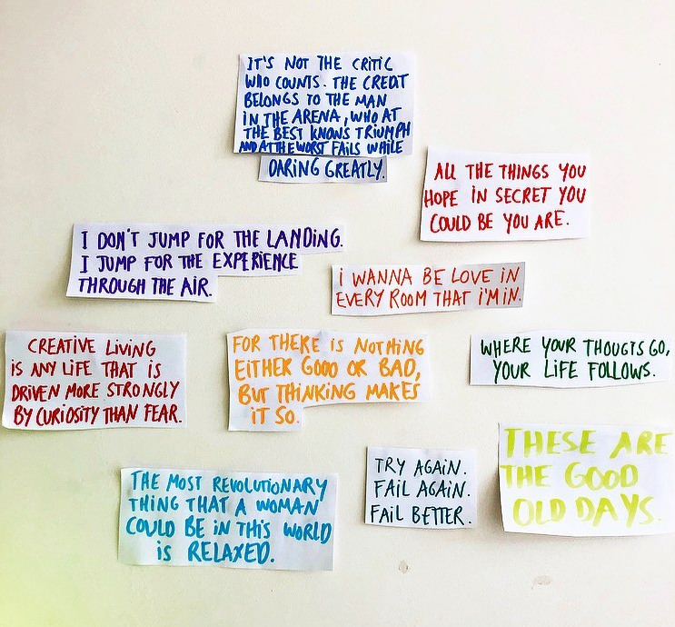
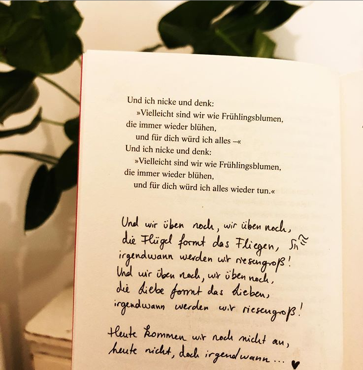
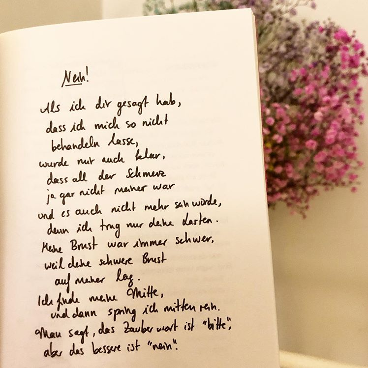
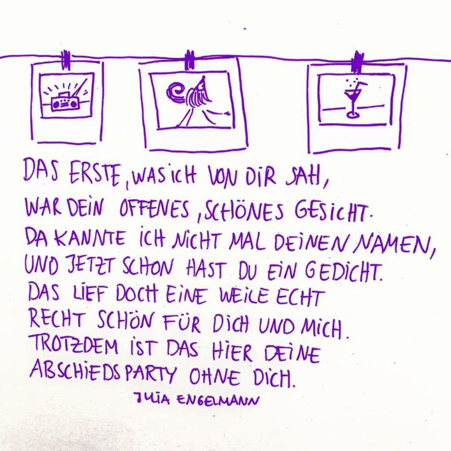

= Julia Engelmann (born 13 May 1992) is a German actress, poet and singer.




POETRY SLAMS
= poetry slam is a competition arts event, in which poets perform spoken word poetry before a live audience and a panel of judges. Culturally, poetry slams are a break with the past image many may have had of poetry as an elitist or rigid art form (Wikipedia)